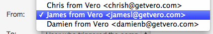
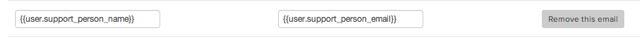

Segmentation is key if you want to send emails that make money. This post examines three segmented email marketing campaigns and why they are effective for SaaS, retail and social businesses alike.
Email is the most effective online marketing channel (dollar spent to dollar earned). The most important thing to get right when using email is to build personal relationships with your customers. This means sending targeted emails with specific goals that actually match each customers’ interests.
People are more likely to buy from companies that understand them.
Want to learn how to send more personal and engaging email marketing that makes an impact? Read on! Here are three approaches to segmentation that have worked:
1. Targeted welcome and retention emails
Personal emails from a member of your core team are always a great way to build rapport, if targeted properly.
This example from Boris at Meldium is a basic example sent to all signups:
This is a great example but going one step further and incorporating segmentation allows you to send even more personal messages with bette results. Take this one from Sprout Social:
By only targeting customers whose trial expired a few months ago this email helps deliver the right message at the right time in order re-engage an otherwise lost customer. The personal touch combined with segmentation is a winner here.
Similarly, Ambassador send this email to customers that haven’t logged in during the trial:
If you are a savvy SaaS business you should be sending this sort of ‘how can I help?’ email and segmentation allows you to ensure you only deliver the message to the most needy customers: opening a window of opportunity to bring them back.
Note that you don’t have to use rich-text only. Dropbox does a splendid job of using segmentation and simple, cartoon-based copy to send emails that build a relationship with the right customer segments and the right time:
PRO-TIP:
As you’re targeting particular segments when on boarding customers, rotate certain emails amongst your team members: send emails with different ‘from addresses’.
For example, in Vero’s welcome series, some emails come from Chris and some come from James or Damien:

Our response rates are always higher when we take this approach for two reasons:
- The emails feel more personal. A customer who hasn’t configured Vero’s tracking code gets an offer for technical help and it comes from James: the right person to help. This improves the customer experience and improves the value of the emails.
- We can better handle responses. All emails we send out in this format use from addresses that get directed to a series of support inboxes the team shares. In this way we can respond faster:
For example, ‘chrish@getvero.com‘ goes to my own Help Scout inbox.
If you wanted to get even fancier and try another approach: you could assign a particular team member to each signup using individual attributes on your customer profiles.
You could then ensure emails are always sent to a particular customer from the same team member.

Vero allows you to configure dynamic FROM addresses like this.
2. Segmented retail offers and newsletters
Segmenting on past purchase and email engagement activity is a great place to start when it comes to segmentation for eCommerce.
UK-based shoe retailer Office Shoes improved their open rate dramatically by segmenting their database on these metrics. Looking at their data they identified that there was a significant portion of customers who had opened by not clicked with an email for a significant period of time.
Whilst initially terming these customers ‘inactive’, Office Shoes conducted an experiment that tested the words “Online exclusive” and “In-store exclusive” alongside each other, with the hypothesis that these customers must be opening emails for a reason, despite not converting.
The result was a huge jump in opens as the ‘inactive’ segment was, in fact, simply interested in offline purchases inside Office Shoes’ physical stores, rather than online offers.
Further to this, segmentation led Office Shoes to spend a great deal of time on their VIP segments, along with grouping male and female customers. Overall they improved their click-through rate by 240% last year thanks to their new segmentation strategy.
This highlights the importance of thinking about what each customer on your list wants to receive in their inbox.
Tzvi at Userlicious shared another example of segmentation whereby all customers in the database were segmented by their workplace. This was done using their domain, e.g. “citibank.com” vs. “@qantas.com” vs. “@gmail.com”.
Using segmentation, Tzvi created an experiment with personalized coupon codes that encouraged viral sharing amongst the recipients’ colleagues at their physical workplace. The result was an increase in newsletter revenue of 35% along with an overall increase in conversions of 86%. Check out the full details of the campaign here.
PRO-TIP:
Vero’s new segmentation tool makes it easy to save segments based on event and user-based filters:
You can also combine segments for granular targeting, for example:
If you want to explore experiments like Tzvi’s above, you could use Liquid syntax to replicate his success:
{% assign domain = user.email | split:’@’ %}
{% assign company = domain.last | split:’.’ %}
Print out the company name: {{company.first | upcase}}
Clever!
3. Using social connections to take targeting up a notch
Quibb is a community-based news source. It’s unique in that it’s goal is to create a tight-knit community for each individual reader. A lot of it’s power is driven by knowing the people conversing around the articles in your feed. It’s the place you go to see high-quality content from your colleagues and get intelligent recommendations from those you trust.
Using the site feels like you are part of your own little clique. All of the content on the site is ultra-segmented so that you get a completely unique view.
Quibb relies heavily on email and founder Sandi blogged about how they have successfully maintained extremely high open rates.
Here’s an example of the body of one of their daily update emails:
Every link in the email is selected for the individual recipient based on their close personal network or the people they are following directly.
That’s segmentation at an individual level.
By targeting its email content to this level Quibb are able to keep their open rates between 50-70%.
There is only one real way to incorporate this level of segmentation into your emails and that is using event-driven data to power your emails.
This example from Zynga is based on the actions of one customer in relation to the past actions of another customer:

Similarly, Twitter use detailed data about what their customers do and who they follow to come up with emails like this:
Event-based email marketing gives you a lot of power!
PRO-TIP:
Capturing meta-data with the customer events you track allows you to do some crazy targeting. Vero allows you to capture attributes with each event your customers’ take. This could be anything from the name of a product to the stats related to this week’s performance.
For example, if you were a real estate website you could capture each property your customer’s look at and the details of that property, like this:
_veroq.push([‘track’, ‘viewed property’, {address: ‘123 small st’, primary_photo: ‘http://www.domain.com/photo.png‘, name: ‘1 Br Apt. Centre of Town’}]);
{kind=link}
You can then use each of these details in outgoing emails triggered when customers view a property:

This is just the tip of the iceberg – what could you do with event attributes?
Over to you
Segmentation can help you send emails to customers that they actually want to read! The success stories above outline how powerful this can be.
If you’re looking to build better customer relationships and increase engagement you should sign up to a Vero free trial and give some of these ideas a try.
What other segmentation strategies have you used?